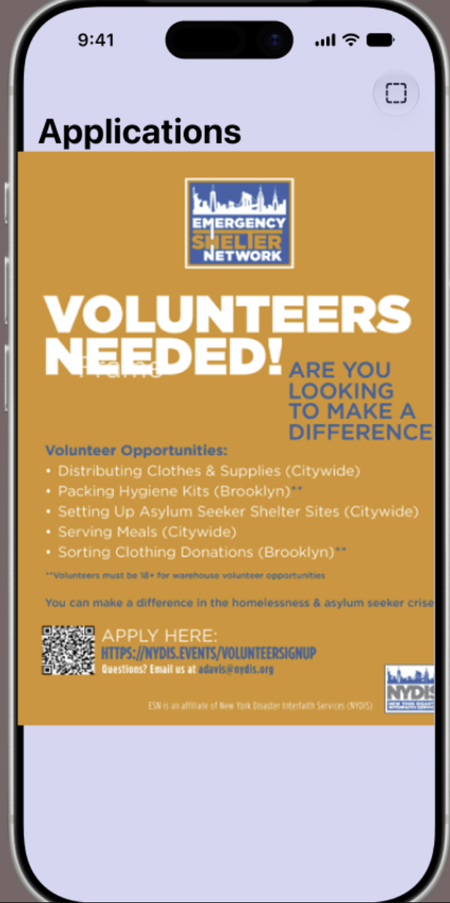
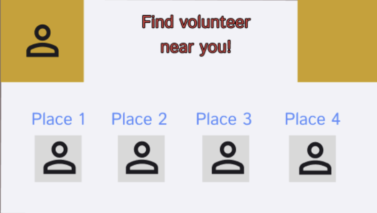
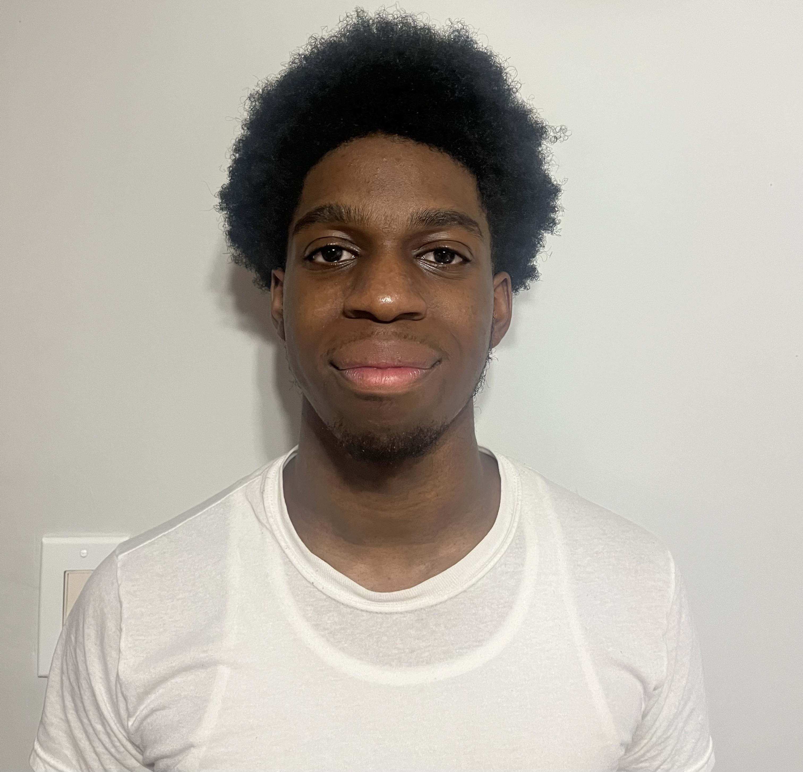

Community App Idea
Wireframes



Darien
Justin

Immanuel
Purpose
What is Volunteer link?
Every week, somewhere in a five-block radius of you, a shelter runs short on hands to pack hygiene kits, a food pantry sorts donations two people down, and a coat drive misses its target by forty coats. Meanwhile, thousands of people who would have shown up never heard about it. That gap is not a shortage of goodwill. It is a distribution problem. Volunteer opportunities live in places that do not travel: a flyer taped to a laundromat window, an Instagram story that expires in 24 hours, a church bulletin, a Google Form buried in a nonprofit's link tree, a QR code that leads to a signup page that closed last March. Kindling collapses all of that into one feed. Local organizations post their needs the way they already do, as flyers and calls for help. Kindling turns each one into something you can actually act on: filterable by neighborhood, time commitment, age requirement, and skill. You tap once to apply, and the org gets a real person instead of a form submission that may or may not show up.
This more accessible form of communication solves the main issue that comes with event organization: transparency. Half the battle is informing individuals that an event is taking place, where it is being held, and at what time. While those are the general details of what’s going on there’s a lot more that goes into making sure people actually show up and participate. Questions that can’t be answered when someone simply fills out a form or application with no way of getting a follow-up. This app aims to solve this issue, not only getting word out to the public, but making sure people know what they're getting into, and if they are truly interested and are ready to make the commitment to participate. After all the app is meant to benefit the community, what benefit is being brought if events are planned and held, with no action or result to show for it?
History
A volunteer Link is a website that helps people find volunteer opportunities in their community. It allows users to explore different organizations and activities that need volunteers. People can choose opportunities based on their interests, skills, and availability. The website makes it easier to find ways to help without having to search through many different websites. It can also help people discover new causes and organizations they may want to support.
Target Audience
The volunteer Link is focused on connecting volunteers with organizations that need extra help. It gives people a simple way to get involved and contribute their time to a good cause. Volunteering can help people develop new skills and gain valuable experience. It can also allow them to meet new people and become more connected to their community. Overall, Volunteer Link helps make volunteering more convenient while encouraging people to make a positive impact.